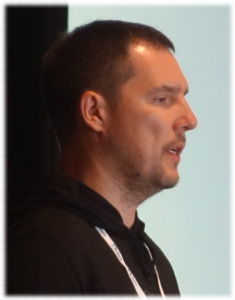

Life behind the tinfoil curtain
Security and convenience rarely go hand-in-hand, but if your job (or life) requires extraordinary care against potentially targeted attacks, the security side of that tradeoff may win out. If so, running a system like Qubes OS on your desktop or CopperheadOS on your phone might make sense, which is just what Konstantin Ryabitsev, Linux Foundation (LF) director of IT security, has done. He reported on the experience in a talk [YouTube video] entitled "Life Behind the Tinfoil Curtain" at the 2018 Linux Security Summit North America.
He described himself as a "professional Russian hacker" from before it became popular, he said with a chuckle. He started running Linux on the desktop in 1998 (perhaps on Corel Linux, which he does not think particularly highly of) and has been a member of the LF staff since 2011. He has been running Qubes OS on his main workstation since August 2016 and CopperheadOS since September 2017. He stopped running CopperheadOS in June 2018 due to the upheaval at the company, but he hopes to go back to it at some point—"maybe".
Ryabitsev is a system administrator, he warned, not a security researcher or a kernel developer. He is "a little bit paranoid", though not nearly as much as some people are. His goal with the talk was to share his experiences in using these Linux-based security-oriented operating systems. Since he has access to various keys and other secrets, he wants to try to ensure that compromising his systems would take a significant amount of effort.
Qubes OS
The guiding principles behind Qubes OS are threefold: compartmentalization using virtualization, hardware isolation, and network isolation. Qubes OS uses Xen as its hypervisor and runs the graphical interface in dom0. All applications run within application virtual machines (AppVMs); windows created by those applications are decorated with different colors to identify which AppVM they belong to.

Hardware isolation is done by requiring that I/O devices are assigned to specific AppVMs using "convenient management tools" before they can be used. For the most part, it works well, Ryabitsev said, but does sometimes fail mysteriously. The USB controllers are typically assigned to their own "sys-usb" VM for isolation. When USB devices are plugged in, they can be assigned to other AppVMs. The network isolation provides full control over each AppVM's networking capabilities—or lack thereof for the "vault" and USB VMs. Each AppVM could have its own VPN or Tor connection and all applications started from there would use that mechanism for their connections.
Qubes OS does require lots of RAM. He typically runs around ten VMs using 1-4GB each; the official requirements are for at least 4GB, "but you will not be a happy camper" with that amount of RAM. He recommends at least 16GB of RAM and fast, large SSD disks, preferably NVMe. Each application will be read cold from the disk, since the VMs will not share any of the OS caching—fast disks are a must.
The system also needs to be multi-processor with multiple cores per processor; Qubes OS "works OK" with two processors, each with two cores, as on his laptop. The CPU must have VT-x and VT-d virtualization for Intel processors or the equivalent for AMD CPUs. While Qubes OS can work with other graphics hardware, it is far better to use Intel graphics. Using other graphics will make things more complicated; "believe me, your life is already going to be complicated".
Qubes OS is built on top of Fedora and uses a modified Fedora installer. Post-installation requires some knowledge of what you plan to do with the system in order to set it up correctly. For the most part, you can probably accept the defaults, but you will need to decide whether to have a sys-usb VM for USB devices, as well as what other AppVMs to create. If you do create a sys-usb, you will need to decide which USB controllers to assign to it; for laptops, it is easy, just assign them all to it. For workstations with a USB keyboard and mouse, you will be unable to use them (and the system as a whole) if you assign that controller to sys-usb.
AppVMs should be treated as logically isolated workspaces, he said; there is no need to have separate VMs for each application. The best way to think about them is as if they are fully separate hardware workstations with convenient ways to do copy-paste and to copy files between them. You should "learn to love and use disposable VMs"; a questionable file or site can be accessed with little risk and no persistence. There are template VMs of various community distributions (Debian, Fedora, Whonix) available; they can be run and then destroyed with only data stored in the /rw filesystem persisting.
In daily use, most things just work as expected. Copying files is more complicated, as you must use the GUI or the command-line tool, but that is easy to get used to. Copy-pasting will, instead, "drive you crazy", Ryabitsev said. It is not broken and works as designed, but you must use Ctrl-Shift-C to copy text to the global clipboard (after selecting and copying it to the local clipboard using, say, Ctrl-C) and Ctrl-Shift-V to be able to paste it elsewhere (then doing a paste operation in the local application). It is meant to ensure that an untrusted AppVM does not override the global clipboard but it is hard to adjust to.
Installing software via DNF or APT only affects an AppVM while it is active; those changes disappear once the AppVM is shut down. In order to make the changes persistent, they must be installed in a template. Global configuration files need to be changed in the template as well; he suggested making symbolic links in the templates to items in /rw/config.
There are things that "you will love" about Qubes OS, including the feeling that you have done your best to protect your data. The Qubes OS developers clearly have security foremost in their minds. Opening mail attachments in disposable VMs is another lovable feature. You can also sanitize a PDF file by opening it in a disposable VM that renders it as an image. If a template upgrade goes poorly (or you don't like the result), you can fall back to the previous template. Having different network endpoint egress per-AppVM is great, as are vault VMs for storing sensitive data since they have no network egress at all.
But there are also things that "will drive you mad" with Qubes OS, including copy-paste. There's no way to do screen sharing without setting up a standalone windowed VM. Suspend/resume bugs are quite frustrating; he can only resume correctly 10% of the time, so he doesn't bother. There is a noticeable lag when launching an application in an AppVM that is not running (45-60 seconds); it is worse if it has to launch a network VM first.
There is some "rare but random weirdness" when running Qubes OS. There is lots of magic in a modern Linux workstation, running Xen just amplifies that. Sometimes, AppVMs won't start, the microphone stops working, the resolver in a VM doesn't work, and so on. It is also complicated to do backups for a Qubes OS machine; it must be done manually, which is annoying.
He then turned to look toward the future. Qubes OS is sponsored by Invisible Things Lab (ITL) and is under active development. It is partially funded by user donations. It also uses Xen, which is "never gonna be in mainline"; Amazon is moving away from it as well. But Qubes OS has been written to use other virtualization mechanisms if needed; Xen has the best hardware virtualization, according the ITL web site. Qubes OS does have an active and diverse user base, so the project may be able to continue on, even if ITL were to stop working on it.
Qubes OS is meant for system administrators with access to privileged data, journalists (as long as they have a knowledgeable support staff), and those who expect targeted attacks from well-funded adversaries. It is not meant for anyone who is not familiar with Linux, especially if they lack a technical support organization. It also is not usable by anyone who cannot afford expensive and powerful modern hardware. Beyond that, anyone who is in danger of a physical-duress threat should not use it; even having Qubes OS on a system is a red flag. Using Tails would be better for deniability.
There are some alternatives that can be combined to reach "some degree of feature parity" with Qubes OS. Firejail can be used for browser sandboxing and Flatpak for isolating other applications. Whonix and Tails can be used for privacy and anonymity. But Qubes OS offers all of that plus convenience, though the cost is that there is a lot to learn in order to use it.
CopperheadOS
Ryabitsev then shifted gears to more secure mobile operating systems. He has had an Android phone for some time now; CopperheadOS is a hardened Android distribution, which made it attractive. Because his office is next door to a psychiatrist's office in his village, he kept getting asked about it by Android; now Google thinks he is a patient. That was one of the things that drove him toward CopperheadOS.
So he switched, until things went awry in May. "CopperheadOS in its previous incarnation is dead". One of the main developers has left the company and destroyed the signing keys, leaving anyone with an installed CopperheadOS device with no way to get updates. Once that happened, he went back to Android, at least for now.
The guiding principles for CopperheadOS are to have a Google-free Android experience with fast security patching turnaround; that is similar to other pure Android open-source project (AOSP) builds. CopperheadOS adds some unique features to that, including a hardened kernel plus the kernel self-protection project (KSPP) patches and a hardened build toolchain. There are also stricter policies for SELinux, stricter defaults in general, MAC address randomization, and more. He was sad to see it go away.
CopperheadOS is only available for a small set of devices, including Google Pixel and Pixel 2 phones and a HiKey development board. It can be downloaded and installed locally, though there won't be any over-the-air (OTA) updates if so. CopperheadOS offers pre-loaded Pixel phones at 80% markup or you can send in your own Pixel device, along with quite a bit of money, to get CopperheadOS installed. Those options do come with OTA updates, however.
In daily use, CopperheadOS is pretty much like any other pure AOSP system. Apps are available from F-Droid or can be side-loaded from various sources, though many apps do not work right (or at all). CopperheadOS made a design decision not to support microG as a replacement for some of the Google proprietary libraries and services, so it does not work. Overall, it is excellent for secure communication and browsing; it also has a remote attestation feature to ensure a handset is running what is expected.
When running CopperheadOS, the battery life is one thing that "you will love"; Google's Play services are extremely battery hungry, he said, so not having them is a boon to the battery life. You will also not be tracked or, at least, not tracked as much. The telephone companies still do plenty of tracking and certain apps (e.g. browsers) may also be tracking you. Fast security patches is another good feature, as is the knowledge that you are using free software—though some features may only be "source available".
Get used to seeing a popup about Google Play services being missing; it is one of things you will hate about the system. There is also a huge loss of convenient perks that you have likely become accustomed to. Mobile phones are expected to be more than just email and phone calls these days. Side-loaded apps probably won't be able to deliver notifications and the app author will not be interested in hearing about your weird setup.
You will be able to communicate securely, but only with those using the same messaging apps, which is not likely to be many of your friends and colleagues. Owning such a device "comes with all the social perks of being a gluten-intolerant vegan with a peanut allergy", he said. Worse yet, from his perspective, is that you are unable to play Pokémon Go on CopperheadOS (or other pure AOSP devices).
CopperheadOS is not exactly dead at this point, he said. It is building and releasing images and still has a store, but that may not last.
It is targeted similarly to Qubes OS, for those who are worried about data collection by governments and large companies. It is also for those expecting precision attacks by deep-pocketed adversaries; that would include journalists, activists, and even government employees. CopperheadOS is not for anyone who needs to use their phone for more than just secure communication, however, he said.
He has gone back to stock Google Pie since the split within the CopperheadOS company; he reimaged his device that day. He has applied some privacy tweaks and recommended the Hermit app as being helpful in that regard. He does not plan to switch to LineageOS (another pure AOSP system), in part because not getting notifications was impacting his work.
Based on Ryabitsev's presentation, it would seem that there is lots more work to be done on the mobile side, but that there is a viable (if inconvenient at times) alternative for the desktop. Others who are not so reliant on notifications may find that LineageOS does what they need, but they are still likely to find a fairly large loss of functionality. Interested readers may wish to have a look at the slides [PDF] from the talk as well.
[I would like to thank LWN's travel sponsor, the Linux Foundation, for
travel assistance to attend the Linux Security Summit in Vancouver.]
| Index entries for this article | |
|---|---|
| Security | Distributions |
| Conference | Linux Security Summit North America/2018 |
Posted Sep 6, 2018 6:23 UTC (Thu)
by viiru (subscriber, #53129)
[Link] (2 responses)
Posted Sep 6, 2018 13:24 UTC (Thu)
by jkingweb (subscriber, #113039)
[Link] (1 responses)
Posted Sep 9, 2018 1:59 UTC (Sun)
by ssd532 (guest, #108069)
[Link]
Posted Sep 6, 2018 6:26 UTC (Thu)
by jalla (guest, #101175)
[Link]
Posted Sep 6, 2018 9:17 UTC (Thu)
by renox (guest, #23785)
[Link] (6 responses)
Posted Sep 6, 2018 9:35 UTC (Thu)
by m_khvoinitsky (subscriber, #104419)
[Link] (3 responses)
Posted Sep 6, 2018 11:30 UTC (Thu)
by grawity (subscriber, #80596)
[Link] (2 responses)
What do you include in the "etc"? Weston and Enlightenment?
Posted Sep 6, 2018 20:00 UTC (Thu)
by m_khvoinitsky (subscriber, #104419)
[Link]
Posted Sep 10, 2018 7:37 UTC (Mon)
by jospoortvliet (guest, #33164)
[Link]
Posted Sep 6, 2018 11:30 UTC (Thu)
by grawity (subscriber, #80596)
[Link]
That didn't stop KDE from implementing server-side decorations and even defining a protocol for negotiating the SSD mode, which is now supported e.g. by GNOME's Gtk3. (After all, protocol extensibility is also part of Wayland's philosophy.)
Posted Sep 6, 2018 21:33 UTC (Thu)
by Ranguvar (subscriber, #56734)
[Link]
Posted Sep 7, 2018 11:20 UTC (Fri)
by nilsmeyer (guest, #122604)
[Link] (6 responses)
Posted Sep 7, 2018 15:52 UTC (Fri)
by epa (subscriber, #39769)
[Link]
Dual-socket laptops have existed, but as lap-melting 17-inch monsters and again it was some time ago.
Posted Sep 7, 2018 15:56 UTC (Fri)
by Ranguvar (subscriber, #56734)
[Link] (2 responses)
Posted Sep 7, 2018 18:50 UTC (Fri)
by zdzichu (subscriber, #17118)
[Link]
Posted Sep 8, 2018 15:33 UTC (Sat)
by nilsmeyer (guest, #122604)
[Link]
Posted Sep 10, 2018 11:19 UTC (Mon)
by jospoortvliet (guest, #33164)
[Link]
Posted Sep 13, 2018 18:04 UTC (Thu)
by mricon (subscriber, #59252)
[Link]
Life behind the tinfoil curtain
Life behind the tinfoil curtain
Life behind the tinfoil curtain
Life behind the tinfoil curtain
Qubes OS
As long as X11 can be used this isn't an issue but in the future..
Qubes OS
Qubes OS
Qubes OS
Qubes OS
Qubes OS
Qubes OS
Life behind the tinfoil curtain
The system also needs to be multi-processor with multiple cores per processor; Qubes OS "works OK" with two processors, each with two cores, as on his laptop.
Perhaps a misunderstanding here, or does he have a laptop with two CPUs?
Life behind the tinfoil curtain
Life behind the tinfoil curtain
Life behind the tinfoil curtain
Life behind the tinfoil curtain
Life behind the tinfoil curtain
Life behind the tinfoil curtain